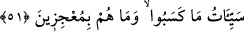
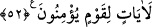
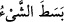

51. Bunun için yaptıkları kötülüklerin vebali onları yakaladı. Bunlardan da
zulmedenlerin işledikleri kötülükler, başlarına gelecektir. Bu hususta Allah’ı âciz
bırakamazlar.
“Bunun için yaptıkları kötülüklerin vebali” kötü amellerinin karşılığı veya
yaptıklarının karşılıkları “onları yakaladı.” Onlara verilen karşılıklara “kötülükler
(seyyiât)” denilmesi, onların yaptıkları kötülüklerin karşılığı olduğu içindir.
“Kötülüğün karşılığı da benzer bir kötülüktür.” (eş-Şûrâ, 42/40). Burada onların
bütün amellerinin kötülük kabîlinden olduğuna remzedilmektedir.
Mânâ şöyledir: Onlar kendilerine verdiklerimizin onların katımızda değerli oldukları
için olduğunu zannettiler. Halbuki öyle değildi. Çünkü azaba düştüler ve malları
kendilerine hiçbir fayda sağlamadı. Bu tıpkı yahudilerin: “Biz, Allah’ın oğulları ve
dostlarıyız!” demelerine benzer. Allah Teâlâ Habîbi’ne (a.s.) hitâben şöyle buyuruyor:
“De ki: Madem öyle, size günahlarınızdan dolayı niçin azab ediyor!” (el-Mâide,
5/18) Yâni, hiç Allah kendi katında değerli kendisine yakın birine azab eder mi? O,
ancak alçak ve değersiz hâinlere azab eder.
Yüce Allah daha sonra Mekke kâfirlerini tehdîd ederek şöyle buyuruyor:
Ey Muhammed! “Bunlardan da” senin muâsırın olan müşriklerden de
“zulmedenlerin” zulümde ve azgınlıkta ileri gidenlerin inkâr ve günahlardan
“işledikleri kötülükler,” öncekilere eriştiği gibi onların da “başlarına gelecektir.”
ulaşacaktır. Nitekim yedi yıl kıtlığa duçar olmakla ve Bedir savaşında ileri gelenlerinin
katledilmesiyle pek fena şekilde başlarına gelmiştir. “Bu hususta” amellerine ve
ahlâklarına göre onları cezâlandırma konusunda “Allah’ı âciz bırakamazlar.” Kâşifî
der ki: “Bizi azab etmekten âciz zannedenlerin azab üzerlerine gelir.” Yâni, azap
mutlaka onları yakalar ve kaçarak ondan kurtulamazlar!
52. Bilmiyorlar mı ki Allah, rızkı dilediğine bol bol verir, dilediğinden de kısar.
Şüphesiz bunda inanan bir kavim için ibretler vardır.
“Bilmiyorlar mı ki” Yâni bunu söylediler de bilmediler mi ya da gaflete düştüler de
bilmediler mi ki “Allah, rızkı dilediğine bol bol verir” genişletir. “ yayıp
genişletmek demektir. Ya’nî, kişinin derecesinin yükselmesi için değil, belki sırf meşîet
gereği.